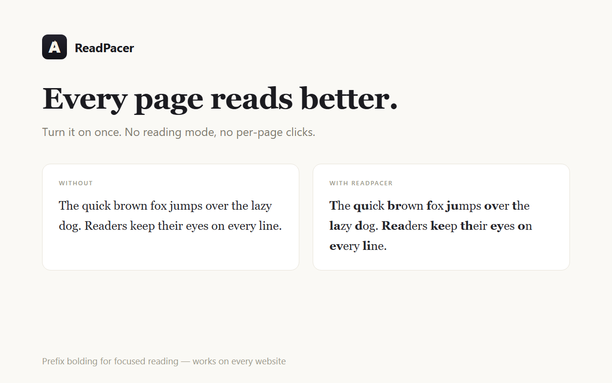
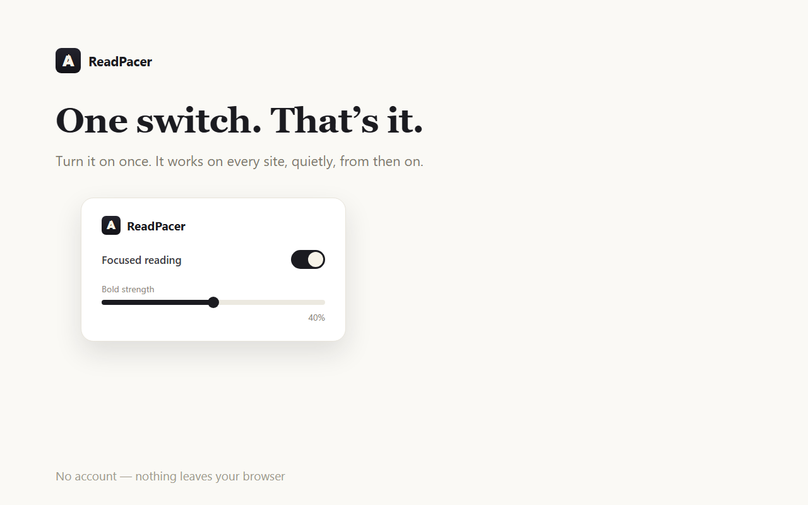

Prefix-bolds word beginnings on every page. Turn it on once; it just works.
Desktop Chrome. Free while early.

Every page reads better. No reading mode, no per-page clicks.

One switch. That's it.
Reading on a screen is harder than it looks: every word starts the same, your eyes drift, and you end up re-reading the same line. Prefix bolding gives every word a stronger head start for your eye to lock onto. Many reading extensions either open a separate reading mode that breaks images and layout, or make you click the icon on every single page. ReadPacer takes the other path: it works in place, and then it stays out of your way.
If you use reading aids because of ADHD or dyslexia, this is a single switch that can just stay on.
ReadPacer runs fully in your browser. It stores one small setting locally (on/off, strength). No account, no analytics, no tracking - and nothing about your pages ever leaves your machine.
Read the privacy policy.
NeufAgents - Home · Vibescan · Free AI visibility check · hi@neufagents.com